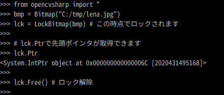

IronPythonからOpenCVSharp その1 で、IronPythonからOpenCVを使う事ができるようになりました。
しかし、個人的に欲しいなあ、という機能がいくつかあったのでC++/CLIで作成しました。以下にヘッダーファイルをあげます。
// wk_util_opencvsharp.h
#pragma once
using namespace System;
using namespace OpenCvSharp;
using namespace System::Drawing;
using namespace System::Drawing::Imaging;
using namespace System::Windows::Threading;
namespace wk_util_opencvsharp
{
public ref class Cv2Util
{
public:
static IntPtr GetIntPtrFromMat(Mat^ mat);
static void Memcopy(IntPtr src, IntPtr dst, int num);
static Byte GetByteValue(Mat^ mat, int index);
static void SetByteValue(Mat^ mat, int index, Byte value);
static void GrayscalePalette(Bitmap^ bmp);
static int SizeOfSbyte();
static int SizeOfByte();
static int SizeOfShort();
static int SizeOfUshort();
static int SizeOfInt();
static int SizeOfUint();
static int SizeOfLong();
static int SizeOfUlong();
static int SizeOfChar();
static int SizeOfFloat();
static int SizeOfDouble();
static int SizeOfDecimal();
static int SizeOfBool();
static void DoEvents();
};
public ref class LockBitmap
{
private:
System::Drawing::Bitmap^ _src;
System::Drawing::Imaging::BitmapData^ _srcData;
System::Drawing::Imaging::PixelFormat _pf;
int _w;
int _h;
int _st;
IntPtr _ip;
public:
LockBitmap(System::Drawing::Bitmap^ ini);
void Free();
property IntPtr Ptr
{
IntPtr get()
{
return _ip;
}
}
};
}
簡単に関数やクラスを説明します。
IntPtr GetIntPtrFromMat(Mat^ mat)Mat.DataPointer でポインタを取得できます。しかし戻り値が、unsigned char* なのでIronPython上では扱えません。IntPtrで取得する関数です。void Memcopy(IntPtr src, IntPtr dst, int num)Marshal.Copy()は、IntPtr同士のコピーできません。C++のmemcpyを利用しました。まさにC++/CLIのマネージ拡張機能です。Byte GetByteValue(Mat^ mat, int index) と void SetByteValue(Mat^ mat, int index, Byte value)Mat.At<T>()、Get<T>()、GetArray() などで、画像データであるMatの要素にうまくアクセスすることができませんでした。（Set系もです。）勉強不足です。。。Mat.DataPointer を利用した簡単な関数を作成しました。void GrayscalePalette(Bitmap^ bmp)PixelFormat.Format8bppIndexed で新規作成した時、カラーパレットはグレイスケールになっていません。int SizeOf***() sizeof関数です。LockBitmapクラス
詳細は wk_util_opencvsharp.cpp を見てください。そんなに難しいことはしていません。